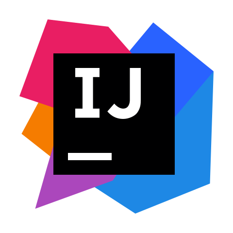

My journey began at Christ Church Boys' College, Baddegama, where I built a disciplined academic foundation. After achieving solid results in my O/Ls, I challenged myself by entering the Common Stream for my Advanced Levels. Through hard work and focus, I secured A, B, and C passes with a 1.5996 Z-score, earning my place at the University of Kelaniya.
Currently, I am pursuing my BSc. (Hons) in Software Engineering. While my degree focuses on the architecture of systems, I believe that great software also needs great presentation. This led me to join the Software Engineering Students' Association (SESA), where I serve as an active member.





BSc (Hons) in Software Engineering
Currently pursuing a full-time undergraduate degree, focusing on core software engineering principles, advanced programming, and system design.
Editor & Graphic Designer
Produced high-quality video promos, motion graphics, flyers and merchandise designs for major events.
G.C.E. Advanced Level
Achieved a Z-score of 1.5996 in the Common stream with results of A, B, and C. This performance secured admission to the Software Engineering degree program at the University of Kelaniya.
G.C.E. Ordinary Level
Successfully completed secondary education with a balanced profile of 3As, 1B, and 5Cs, providing the foundation for further studies in the Science stream.